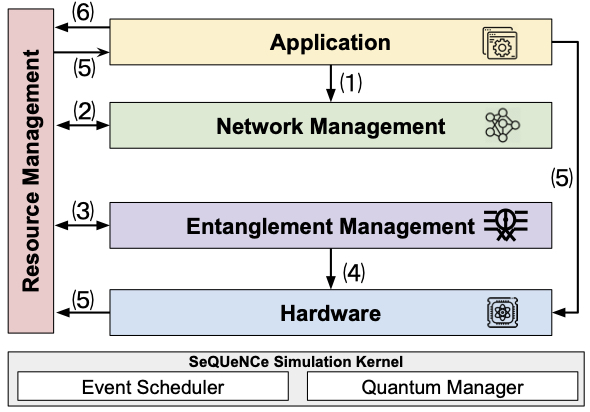
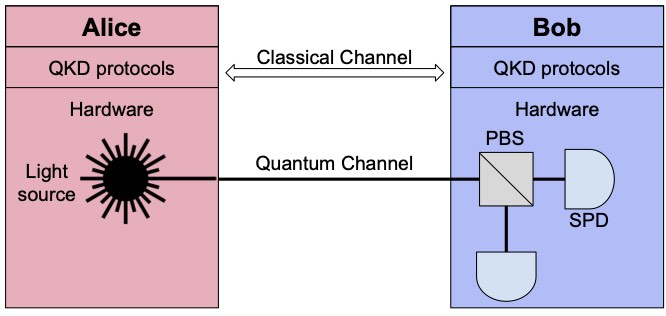

Recent advances in quantum information science enabled the development of quantum communication network prototypes and created an opportunity to study full-stack quantum network architectures. Working together with Argonne National Lab (led by Dr. Martin Suchara), we develop SeQUeNCe, a comprehensive, customizable quantum network simulator.
Our simulator consists of five modules: Hardware models, Entanglement Management protocols, Resource Management, Network Management, and Application. This framework is suitable for simulation of quantum network prototypes that capture the breadth of current and future hardware technologies and protocols.
We design SeQUeNCe to enable comparisons of alternative quantum network technologies, experiment planning, and validation, and to aid with new protocol design. We are releasing SeQUeNCe as an open source tool and aim to generate community interest in extending it.

Figure 1. Modularized design of SeQUeNCe closely matching an abstract quantum network architecture

Figure 2. Simulation of a Two-Terminal QKD Network
Selected Publications
Xiaoliang Wu, Alexander Kolar, Joaquin Chung, Dong Jin, Martin Suchara, and Rajkumar Kettimuthu.
Parallel Simulation of Quantum Networks with Distributed Quantum State Management.
ACM Transactions on Modeling and Computer Simulation (TOMACS), February 2024.
Xiaoliang Wu, Bo Zhang, Gong Chen, and Dong Jin.
A Scalable Quantum Key Distribution Network Testbed Using Parallel Discrete-Event Simulation.
ACM Transactions on Modeling and Computer Simulation (TOMACS), April 2022.
Xiaoliang Wu, Alexander Kolar, Joaquin Chung, Dong Jin, Tian Zhong, Rajkumar Kettimuthu, and Martin Suchara.
SeQUeNCe: A Customizable Discrete-Event Simulator of Quantum Networks.
Quantum Science and Technology, vol. 6, no. 4, September 2021.
Xiaoliang Wu, Bo Zhang, and Dong Jin.
Parallel Simulation of Quantum Key Distribution Networks.
2020 ACM SIGSIM Conference on Principles of Advanced Discrete Simulation (PADS), June 2020.
Finalist for the Best Paper Award[pdf]